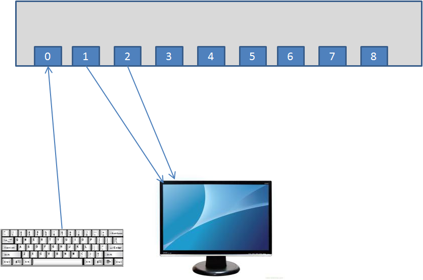
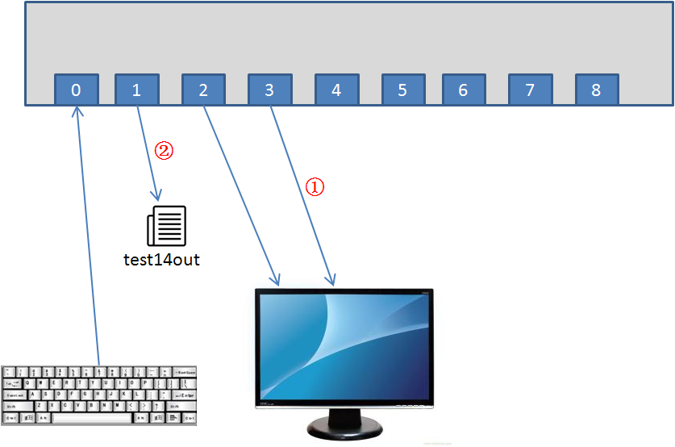
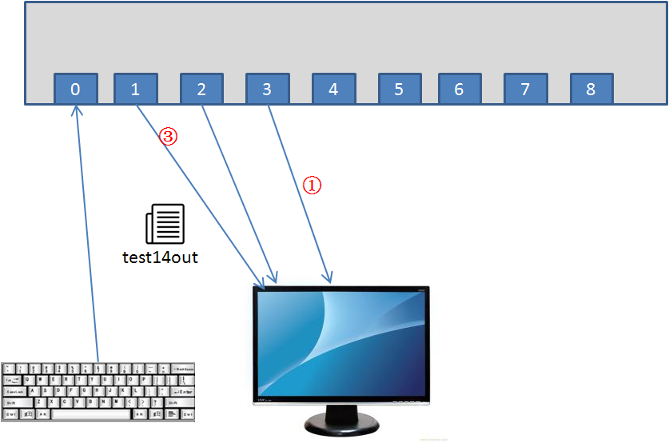

作者：jicanmeng
时间：2016年05月17日
Linux系统将每个对象当作文件来处理。Linux用文件描述符来标识每个文件对象。文件描述符是一个非负整数，可以唯一标识会话中打开的文件。每个过程一次最多可以有9个文件描述符(这里的"过程"是什么意思?)。出于特殊目的，bash shell保留了最早的3个文件描述符（0，1，2）。
<或者0<表示输入重定向>或者1>表示输出重定向2>表示将错误输出重定向>>表示追加，可以对STDOUT进行追加，也可以对STDERR进行追加&>表示将标准输出和错误输出重定向到同一个文件中例如：
ls -al test1 test2 test3 badtest 2> 2.txt 1> 1.txt
表示将错误输出重定向到2.txt文件中，将标准输出重定向到1.txt文件中。
ls -al test1 test2 test3 badtest &> 1.txt
表示将标准输出和错误输出都重定向到1.txt文件中。
[jicanmeng@andy tmp]$ cat 1-temp.sh
#!/bin/bash
echo "This is indirection" > a.txt
echo "This is normal output"
[jicanmeng@andy tmp]$ bash 1-temp.sh > b.txt
[jicanmeng@andy tmp]$ cat b.txt
This is normal output
[jicanmeng@andy tmp]$ cat a.txt
This is indirection
[jicanmeng@andy tmp]$ 可以重定向到一个文件中，也可以重定向到另一个文件描述符对应的对象上，这就需要用到>&符号了。
举个例子：
[jicanmeng@andy tmp]$ cat 2-temp-redirection.sh
#!/bin/bash
echo "This is an error" >& 2
echo "This is normal output"
[jicanmeng@andy tmp]$ ./2-temp-redirection.sh > a.txt
This is an error
[jicanmeng@andy tmp]$ cat a.txt
This is normal output
[jicanmeng@andy tmp]$ 如果脚本中有大量数据需要重定向，那么对每行语句都执行重定向命令就比较麻烦。我们可以在执行脚本程序时设定重定向参数，也可以在脚本中用exec命令进行永久重定向。举例如下：
[jicanmeng@andy tmp]$ cat 3-forever-redirection.sh
#!/bin/bash
exec 2> testerror
echo "This is the start of the script"
echo "now redirecting all output to another location"
exec 1> testout
echo "This output should go to the testout file"
echo "but this should go to the testerror file" >& 2
[jicanmeng@andy tmp]$ ./3-forever-redirection.sh
This is the start of the script
now redirecting all output to another location
[jicanmeng@andy tmp]$ cat testout
This output should go to the testout file
[jicanmeng@andy tmp]$ cat testerror
but this should go to the testerror file
[jicanmeng@andy tmp]$ 先看一个例子：
[jicanmeng@andy tmp]$ cat 4-restore-stdout.sh
#!/bin/bash
exec 3>& 1
exec 1> test14out
echo "This should store in the output file"
echo "along with this line."
exec 1>& 3
echo "Now things should be back to normal"
[jicanmeng@andy tmp]$ ./4-restore-stdout.sh
Now things should be back to normal
[jicanmeng@andy tmp]$ cat test14out
This should store in the output file
along with this line.
[jicanmeng@andy tmp]$ 实际上，画图来理解这个程序是最直观的。程序刚开始运行的时候，如图1所示。 
在执行了exec 3>& 1和exec 1> test14out两条指令后，如图2所示：

在执行了exec 1>& 3指令后，如图3所示：

可以看出，文件描述符3重定向到某个文件描述符1，就是将输出到文件描述符3的数据输出到文件描述符1表示的对象即显示器上面。
下面这个输入文件描述符的恢复和上面的例子思路是相同的：
[jicanmeng@andy tmp]$ cat 2-temp-redirection.sh
#!/bin/bash
echo "This is an error" >& 2
echo "This is normal output"
[jicanmeng@andy tmp]$ cat 5-restore-stdin.sh
#!/bin/bash
exec 3<& 0
exec 0< 2-temp-redirection.sh
count=1
while read line
do
echo "Line #$count: $line"
count=$[$count+1]
done
exec 0<& 3
read -p "Are you done now? " answer
case $answer in
Y|y) echo "Goodbye";;
N|n) echo "Sorry, this is the end";;
esac
[jicanmeng@andy tmp]$ ./5-restore-stdin.sh
Line #1: #!/bin/bash
Line #2:
Line #3: echo "This is an error" >& 2
Line #4: echo "This is normal output"
Are you done now? y
Goodbye
[jicanmeng@andy tmp]$ 尽管看起来有些奇怪，但你可以打开单个文件描述符来作为输入和输出。你可以用同一个文件描述符来从文件中读取数据，并将数据写到同一个文件中。
创建读写文件描述符时，需要注意的是，shell会维护一个内部指针，指明现在在文件中什么位置。由于你在向同一个文件进行读取数据、写入数据操作，任何读或写都会从文件指针上次保存的位置开始。下面的例子可以说明这个问题：
[jicanmeng@andy tmp]$ cat testfile
This is the first line.
This is the second line
This is the third line.
[jicanmeng@andy tmp]$ cat 6-read-write-file-descriptor.sh
#!/bin/bash
exec 3<> testfile
read line <& 3
echo "Read: $line"
echo "This is a test line" >& 3
[jicanmeng@andy tmp]$ ./6-read-write-file-descriptor.sh
Read: This is the first line.
[jicanmeng@andy tmp]$ cat testfile
This is the first line.
This is a test line
ine
This is the third line.
[jicanmeng@andy tmp]$ 要关闭文件描述符，就将它重定向到特殊符号-，我们可以认为-是一个特殊的文件描述符。举例如下：
[jicanmeng@andy tmp]$ cat 7-close-file-descriptor.sh
#!/bin/bash
exec 3> test17file
echo "This is a test line of data" >& 3
exec 3>& -
echo "This won't work" >& 3
[jicanmeng@andy tmp]$ ./7-close-file-descriptor.sh
./7-close-file-descriptor.sh: line 9: 3: Bad file descriptor
[jicanmeng@andy tmp]$ cat test17file
This is a test line of data
[jicanmeng@andy tmp]$ lsof命令会列出整个linux系统打开的所有文件描述符，显示每个文件的有关信息。这包括后台运行的所有进程以及登录到系统的任何用户。
有足够的命令行选项和参数帮助过滤lsof的输出。最重用的有-p和-d，前者允许指定进行ID，后者允许指定要显示的文件描述符的名称。另外，-a选项用来对其它两个选项的结果执行布尔AND运算。举个例子：
显示当前进程的文件描述符0，1，2的有关信息：
[jicanmeng@andy tmp]$ lsof -a -p $$ -d 0,1,2
COMMAND PID USER FD TYPE DEVICE SIZE/OFF NODE NAME
bash 4836 jicanmeng 0r CHR 136,5 0t0 8 /dev/pts/5
bash 4836 jicanmeng 1u CHR 136,5 0t0 8 /dev/pts/5
bash 4836 jicanmeng 2u CHR 136,5 0t0 8 /dev/pts/5
[jicanmeng@andy tmp]$ lsof命令还有一个重要的用途：如果在卸载设备时，系统提示设备繁忙，无法卸载设备，通常是有进程还在访问该设备或使用该设备上的文件。这时可用lsof命令获得使用它的进程信息，然后在应用中停止使用该设备或停止该进程。
要阻止错误输出，可以将STDERR重定向到/dev/null文件中。你定向到该文件的任何数据都会被丢弃。这是阻止任何错误信息而不保存它们的一种通用方法。
你也可以在输入重定向中将/dev/null作为输入文件。由于/dev/null不包含任何内容，程序员通常用它来快速删除现有文件中的数据而不用先删除文件再创建。举个例子：
[jicanmeng@andy tmp]$ cat testfile
This is the first line.
This is the second line.
This is the third line.
[jicanmeng@andy tmp]$ cat /dev/null > testfile
[jicanmeng@andy tmp]$ cat testfile
[jicanmeng@andy tmp]$ mktemp命令用于创建临时文件。
默认情况下，mktemp命令会在当前目录下创建一个文件，并返回文件名。要用mktemp命令在当前目录下创建一个临时文件，你只要指定一个文件名模板就行了。模板可以包含任意文本文件名，在文件名末尾加上6个X就行了。例如：
[jicanmeng@andy tmp]$ mktemp testing.XXXXXX
testing.aToZtb
[jicanmeng@andy tmp]$ ls -l testing*
-rw-------. 1 jicanmeng jicanmeng 0 May 18 22:28 testing.aToZtb
[jicanmeng@andy tmp]$ mktemp命令会用随机的6个字符码替换这6个X，从而保证文件名在目录中是唯一的。
-t选项会强制mktemp命令在系统的临时目录即/tmp目录下创建该文件，并返回文件的全路径和文件名。
-d选项告诉mktemp命令在当前目录下创建一个临时目录。例如：mktemp -d dir.XXXXXX
有时我们会有这样的需求：将输出一边发送到显示器一边发送到日志文件。通过tee命令可以达到这个目的。
tee命令相当欲管道的一个T型接头。它将从STDIN过来的数据同时发给两个目的地。一个目的地是STDOUT，另一个目的地是tee命令行指定的文件名。
如果你想将数据追加到文件中，必须用-a选项。